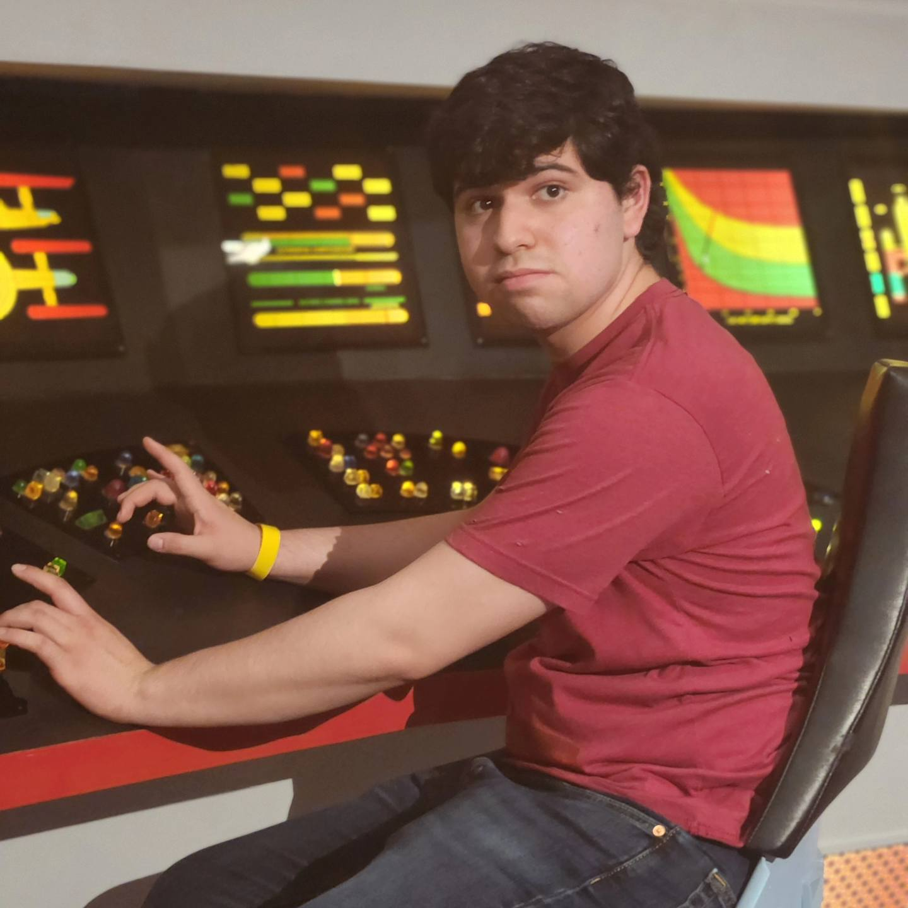
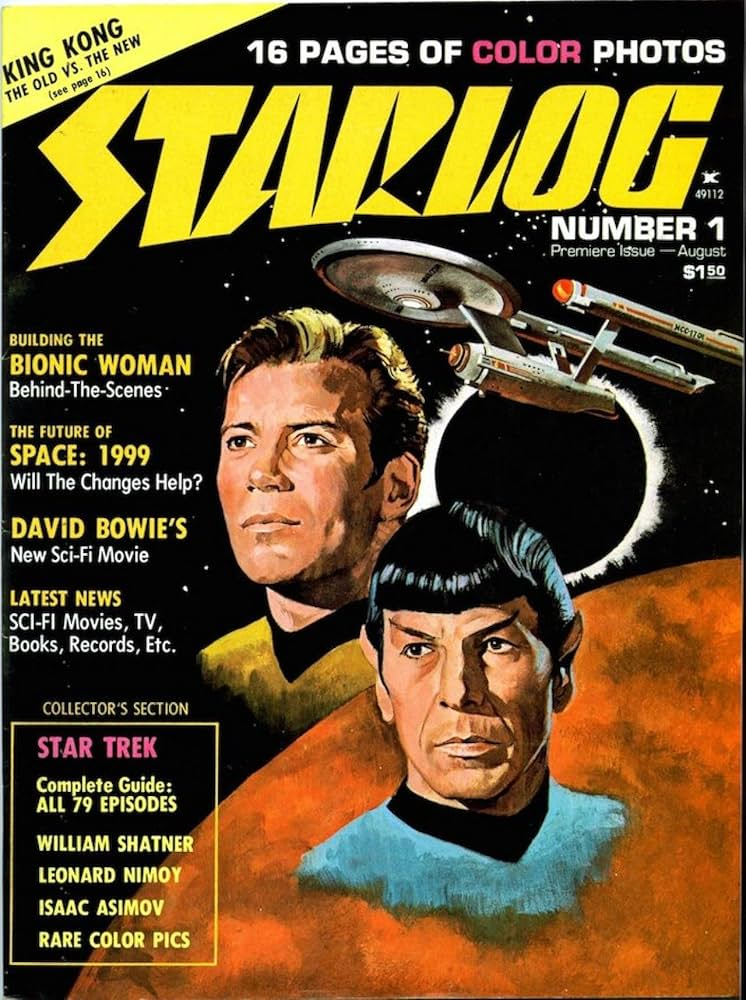
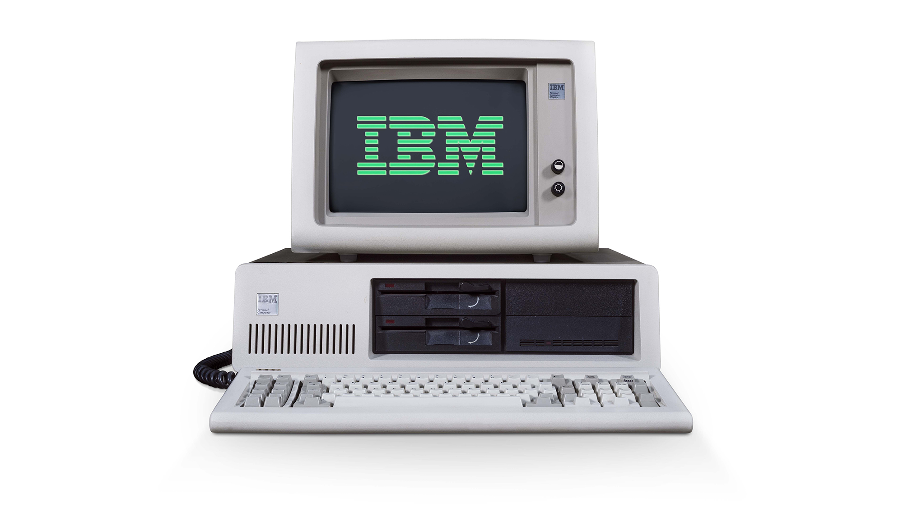

Hello my name is Tizziano E. Britez. I am 20 years old,
and my major is programing, associate degree. And I plan to upgrade
my degree to computer science with my masters in robotics. I lived with
my mom and dog. I am a hispanic, Both parnents are from
Argentina, but I was raise and born in the U.S.A.
I work out, study, read, and watch TV. I learn martial arts such
as boxing, kick-boxing, and muay thai. My future carrer is going
to be freelance; two will be programing with robots, and writing science
fiction stories. I finished four of my classes so far, my GPA is average.
and hoping to get a good grade so far.
Science Fiction

This is my favorite hobby, I love science fiction; when it comes to
posiblities the future, or any extraordinary discoveries. I would watch any media like
novels, pulps, flims, tv shows, video games, magazines, and comic books.
my primary favorite sci-fi franchise is Star Trek.
Martial Arts
I love fighting, I watch fighters damnaging to each other
until they're stand down. I would watch any channel or stream like UFC
or anything. My favorite fighter is Chuck Norris.
Computers

When it comes to computer, I manily focus on old school Computers
I love them when you learn BASIC programming to govern the
computer. I saw those types in sci-fi films such Alien(1979),
Blade Runner, Short Circuit, and other sci fi in the 70s or 80s.
Economics
I got instered in economics when the Argentinan economist; Javier Milei
became president. He helped Argentina fixed the economics without the
goverment help, no rent control, no inflation, and people with a programing
experience, getting a better salary. That got me instered so I buy a lot of books
about economics, the history, influencers, and the basics. And hope to learn it
better.